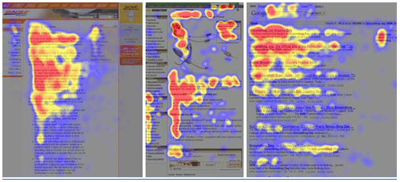

UX/UI Research
Soccer is my favorite sport and hobby, so it is a natural starting point for me to research and build a UX/UI project around this topic. When using Sketch to draw sketches for the ACCDS site illustrated below, I will analyze Germany’s Bayern Munich and Chelsea FC, my favorite soccer teams, for inspiration and techniques for this type of website, specifically identifying techniques both clubs used successfully.
Menu Bar
The menu bar’s importance can’t be overstated, as it leads the customer into the rest of the site. It sets the tone for the ease of use. A study called 'Eyetrack III: What We Saw When We Looked Through Their Eyes' showed that top navigation performed better than left-side navigation after monitoring 46 people for one hour as their eyes followed mock news websites and real multimedia content. In the Eyetrack photos below we can see the left sidebar was largely ignored. Additionally, if a subsection of the site has many components that would be easier for the customer to navigate to straight from the home page, there is the option of using vertical drop-down menus as inserts out of tabs on the main horizontal menu bar.
For ACCDS, the horizontal menu bar appears to be the more logical choice. We want to give our customers the opportunity to view our team news and vertical ad (discussed later) without the clutter of a third vertical column of content. We can also take this opportunity to make the link to our online store stand out against the orange by making it black and all-caps, as it ultimately is the most important aspect of the club site. The horizontal bar also draws the customers’ eyes to one of the team sponsors, Adidas.
Slideshow
We want to keep our customers’ engagement levels as high as we can, in order to further entice them to make it to our shopping page. Creating a slideshow on the opening page not only allows the viewer to quickly catch the latest news and updates of the product, but also increases the potential rate of viewership time. Sliding right could potentially get them to view right to the adjacent vertical ad.
Advertising
Advertising shape, size, and placement utilized together can lead the customers most efficiently to the business’s ultimate goal of directing them to the checkout cart. Google’s AdSense team researched the most effective sizes for ad box forms:
- 320 x 100 Large mobile baner
- 300 x 600 Half page
- 336 x 280 Large rectangle
- 300 x 250 Medium rectangle
- 728 x 90 Leaderboard
Other options recommended by GoogleAds include vertical shapes. The vertical shapes allow the customer to maintain visual contact with the ads as they are scrolling down a page perusing a business’s content. It also creates a natural left-right reading pattern for the customer/fan when paired with our slideshow on the site's homepage. In order to pair with our slideshow on the front page, the 160 x 600-pixel template makes the most sense for our purposes.
A watch sponsor like Rolex works well with the Match Center page, playing off of the idea of checking the team’s schedule and game times.
When it comes to creating an advertising campaign for ACCDS, we must consider our approach before jumping into the deep end to save time and resources. An initial question to answer would be, "Who our audience is?" Are they broad and wide-reaching, or more niche. According to SmartyAds, vertical advertising makes more sense for businesses who “offer very specific products or services.” They further explain that horizontal advertising appeals to customers who share some common characteristics that are more broad in range, leading a designer to think more heavily on a more open-ended approach.
Because ACCDS focuses on a niche group of people centered around supporting the soccer club and the goal is to direct the customer/fan to the Shop while they are getting excited about the club by checking out the content covering the team, a vertical-advertising approach is more appropriate. That would be suggestive of focusing on publications and media outlets that either cover the team or have a focus of soccer to place advertisements for the clubs, as well as regional outlets that could be interested in sponsorship.
Desktop and Mobile Wireframes